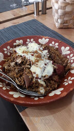
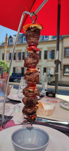
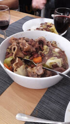
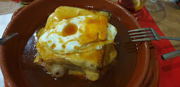
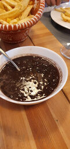

Accroche proposée par le studio — à valider avec l'établissement.
Une maison familiale où l'on partage une vraie passion des produits portugais : généreuses assiettes servies sur la terre cuite, vins du pays et une terrasse à deux pas du château de Mersch.



Quelques spécialités de la maison, dans l'esprit d'un vieux registre de cave. Assiettes copieuses, produits portugais, à accompagner d'un verre de rouge.
Les plats servis comme au pays, sur les assiettes en terre cuite du Portugal. Photos réelles de la maison — clichés haute résolution à fournir par l'établissement.


La brochette suspendue, servie à table quand le soleil est de la partie.
« Adega Velha » veut dire la vieille cave à vin. C'est l'esprit de la maison : chaleureuse, sans façon, portée par une famille qui aime recevoir et faire goûter le vrai Portugal.
« On y vient manger après avoir admiré le château de Mersch. »
Le service est attentif, les portions généreuses, les prix raisonnables — et la terrasse s'ouvre dès les beaux jours. On y sert le voisinage de Mersch, la communauté portugaise et les familles, midi et soir.